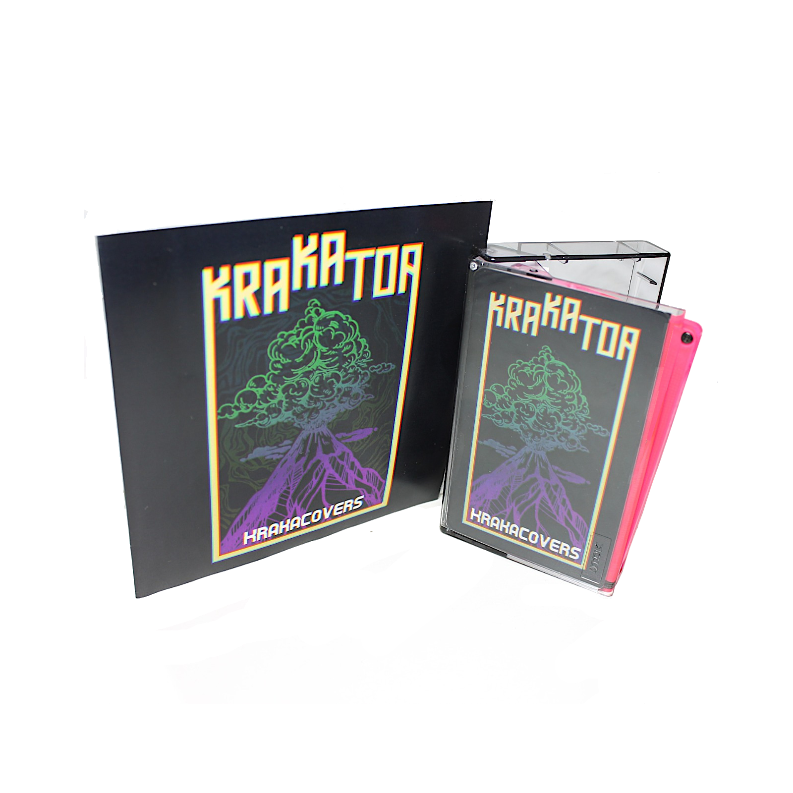

Krakacovers [2021]
Contate a disponibilidade pelo Instagram @krakatoanoise. Você também pode escutar no Audius ou YouTube.
01 - Elephant (Tame Impala)
02 - I'm in Your Mind Fuzz (King Gizzard and the Lizard Wizard)
03 - Snake in the Grass (The Murlocs)
04 - What if (The Murlocs)
05 - Nite Expo (Oh Sees)
06 - Space Cadet (The Murlocs)
07 - Ghostride (Crumb)
08 - It's Got Old (King Gizzard and the Lizard Wizard)
09 - Jinx (Crumb)
10 - It's Got Old, unppluged (King Gizzard and the Lizard Wizard)
---[Bônus]---
11 - Strawberry (Moses Gunn Collective) live
12 - The Dream (Thee Oh Sees) rehearsal
13 - Fantastic Explosion of Time (Pond) rehearsal
14 - Giant Tortoise (Pond) rehearsal
15 - Digital Black (King Gizzard and the Lizard Wizard) rehearsal
16 - Gamma Knife (King Gizzard and the Lizard Wizard) rehearsal
17 - People Vultures (King Gizzard and the Lizard Wizard) rehearsal
18 - Trapdoor (King Gizzard and the Lizard Wizard) live
Produzido por Polinha Records.